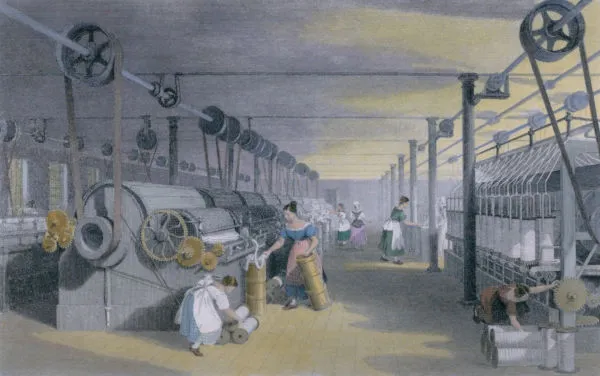
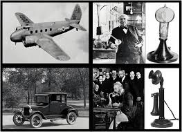
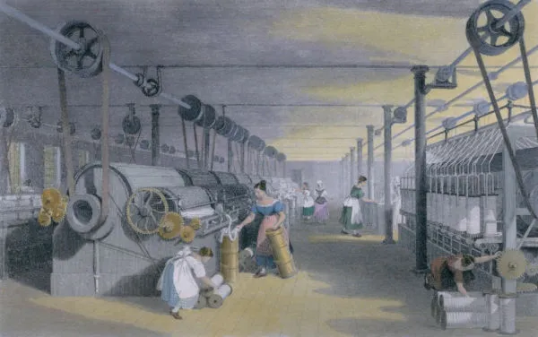
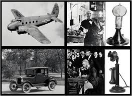

A 2ª Revolução Industrial foi um período de transformação econômica e tecnológica. Iniciou-se na segunda metade do século XIX e se estendeu até o início do século XX. Novas tecnologias como eletricidade, aço e petróleo impulsionaram o crescimento. Houve um aumento significativo na produção e no comércio global. A Revolução trouxe mudanças sociais e urbanas, com migração para cidades. Novas formas de transporte conectaram o mundo e aumentaram a globalização. A 2ª Revolução Industrial moldou o mundo moderno e preparou o terreno para a era digital.
 


